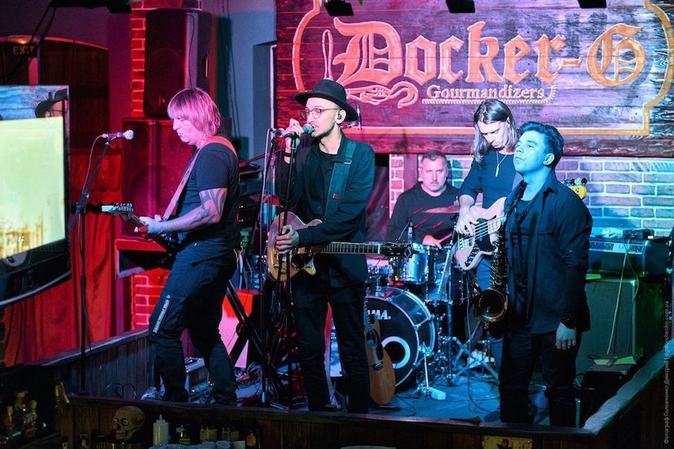
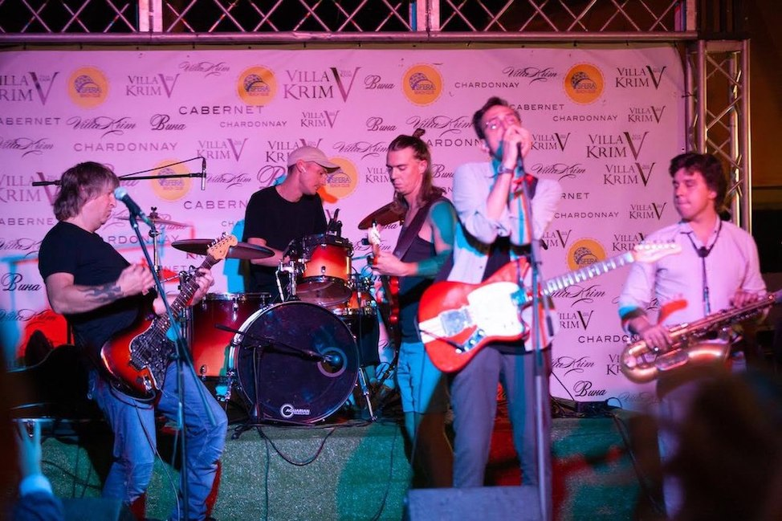

Вдячні всім, хто слухав нашу музику в мережі, хто робив репости, знімав сторіс.
Дякуємо всім хто відвідав наш концерт і був з нами. Дякуємо за всі теплі слова, обійми, посмішки, ваші голоси,
що співали з нами в унісон, ваші ліхтарики, що погойдувалися в такт музики.
Все це дає нам стимул рухатись далі, продовжувати нашу творчу працю, нашу справу.

Кожен учасник гурту моє свою улюблену пісню з альбому «Никакого Рок-Н-Ролла».
Взагалі, створення пісень схоже на садівництво. Спочатку беремо зернятко, саджаємо його у землю і дуже
дбайливо
піклуємось про нього. За весь час роботи в нашому саду виросла низка дерев з різними плодами.
Хтось вподобає більше одні плоди, хтось інші, однак наш сад це спільна праця.